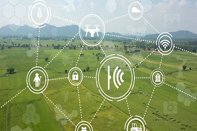
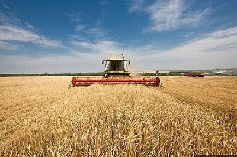
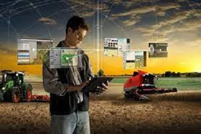

Номер: 208
Назва спеціальності:
Агроінженерія



ОПП «Технічний сервіс сільськогосподарської техніки» (магістри)
Освітньо-професійна програма «Технічний сервіс
сільськогосподарської техніки» спеціальності 208 «Агроінженерія»
орієнтована на підготовку висококваліфікованих фахівців, які
володіють поглибленими знаннями щодо проектування, експлуатації та
сервісу сільськогосподарської техніки для самостійного вирішення
науково-технічних і практичних завдань агроінженерії на базі
національної нормативної документації та міжнародних стандартів;
здобуття ними теоретичних та практичних знань, умінь, навичок та
інших компетентностей, достатніх для розв’язання проблем та
продукування нових ідей у галузі експлуатації та сервісу
сільськогосподарської техніки. Програма підготовки здобувачів
забезпечує підвищення рівня їх знань, навичок та компетентностей
шляхом забезпечення міждисциплінарної та багатопрофільної
підготовки фахівців із збору, аналізу та поширенню інформації
стосовно сучасних процесів розвитку технологій та відносин
суб’єктів в галузі аграрних наук та продовольства й орієнтована на
глибоку спеціальну підготовку сучасних фахівців, які є
ініціативними та здатними до швидкої адаптації до умов та викликів
сучасного сільськогосподарського виробництва; враховує сучасні
вимоги до вирішення практичних питань та формує магістрів з
технічного сервісу у сфері агроінженерії з новим перспективним
способом мислення, здатних не лише застосовувати існуючі методи
аналізу виробничих процесів, але й розробляти нові на базі
сучасних досягнень науки, техніки і технологій. Структура програми
передбачає ефективне поєднання теоретичної компоненти та
практичної підготовки, зокрема вивчення: теорії процесів
виробництва, експлуатації та ремонту об’єктів
сільськогосподарської техніки; методів збирання, обробки,
інтерпретації результатів досліджень та моделювання процесів у
сфері агроінженерії; методик та технологій виробничої, проектної,
організаційної та управлінської діяльності; засобів
технологічного, інформаційного, інструментального, діагностичного,
сервісного та програмного забезпечення процесів експлуатації та
ремонту сільськогосподарської техніки; патентознавства та
авторського права; адміністративного та інженерного менеджменту;
методичних, психологічних та педагогічних основ викладання у вищій
школі тощо. Підготовка фахівців проводиться в активному
дослідницькому середовищі та передбачає поглиблене вивчення мов,
постійну апробацію своїх знань та навичок на конференціях, а також
під час стажування та виконання кваліфікаційних робіт за
замовленнями провідних підприємств регіону. Фахівці можуть
працювати на підприємствах Міністерства аграрної політики України,
а саме: на суб’єктах підприємницької діяльності сфери аграрного
виробництва; у обласних управліннях агропромислового розвитку; у
науково-дослідних інститутах (станціях, лабораторіях); у вищих
навчальних закладах технічного спрямування ІІ-го рівня акредитації
та коледжах обіймаючи посади: директора (керівника) малого
промислового підприємства (фірми), директора (начальника)
організації (дослідної, конструкторської, проектної), директора
(начальника) професійного навчально-виховного закладу
(професійно-технічного училища, професійного училища і т. ін.),
головного інженера, технічного експерта з промислової безпеки,
інженера з організації експлуатації та ремонту, інженера з
патентної та винахідницької діяльності, інженера-технолога,
інспектора з експлуатаційних, виробничо-технічних та
організаційних питань, завідувача (начальника) відділу
(науково-дослідного, конструкторського, проектного та ін.),
завідувач лабораторії (науково-дослідної, підготовки виробництва),
головного механіка, молодшого наукового співробітника, наукового
співробітника, начальника відділу, асистента, завідувача
відділення у коледжі, викладача професійно-технічного навчального
закладу та ін. Стабільно високий попит на фахівців з технічного
сервісу сільськогосподарської техніки на ринку праці надає
фахівцям широкі можливості для працевлаштування та побудови
кар’єри й гарантує високий рівень оплати праці!